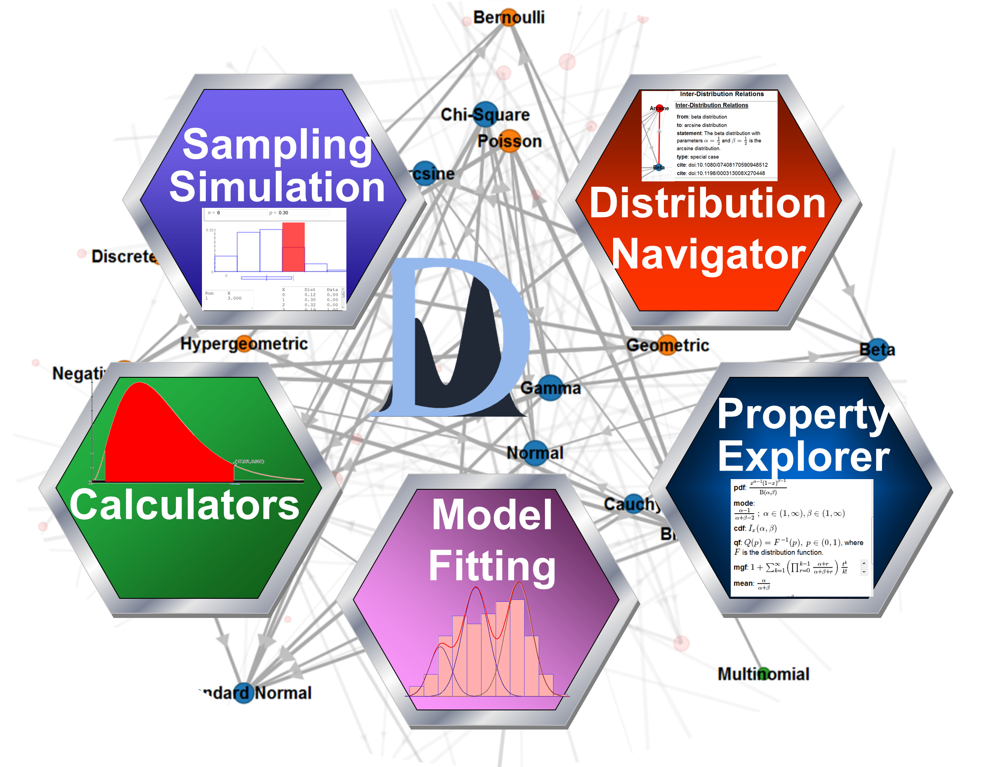

|
The Probability Distributome Project
is an open-source, open
content-development project for exploring, discovering, navigating,
learning, and
computational utilization of diverse probability distributions.
A probability distribution is a function that assigns probabilities to
events. For example, flipping a fair coin generates 2 possible equally
likely outcomes (head and tail), and rolling a single loaded 6-face die
generates 6 possible outcomes, each having a chance to be observed
proportionally-equal to the die’s loading factors. Usually, a
probability distribution function is defined in the context of a random
variable, or a vector, and provides likelihoods that the random
variable may be observed within a specific sub-set of the space of its
possibilities. For instance, throwing a dart at a dartboard
generates a score (integer value), indicating the landing location’s
proximity to the center of the dartboard (bulls eye), which naturally
leads to a definition of the probability distribution of the dart
landing in a specific area.
Probability distributions are
mathematically rich objects that give rise to other mathematical
functors. Depending on the nature of the space where a probability
distribution is defined (discrete, continuous, univariate,
multivariate, Euclidian and non-Euclidean, etc.), it naturally leads to
various functors like probability mass or density function,
distribution function, quantile function, probability and moment
generating functions, and so on. In its most general form, a
probability distribution is defined as mapping between a measurable
space and the unitary interval.
|
 |
{kind=link}
- Visually traversal of the space of all well-defined (named) distributions;
- Exploration of the interrelationships between different distributions;
- Distribution search by keyword, property and type;
- Retrieval of qualitative (e.g., analytic form of density function) and quantitative (e.g., critical and probability values) information about each distribution;
- Discovery of references and additional distribution resources.
- Interactive utilization of various probability distribution calculators, simulators and experiments.